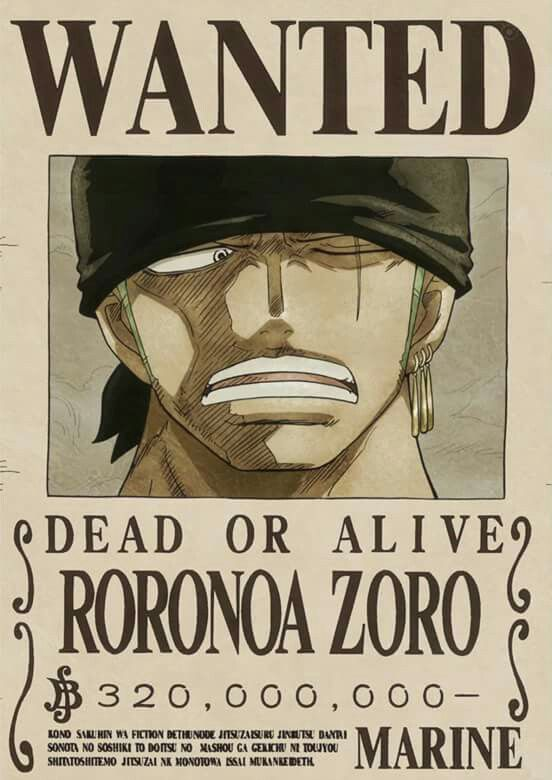

Monkey D. Luffy, also known as "Straw Hat Luffy" and commonly as "Straw Hat",is the main protagonist of the manga and anime, One Piece. He is the founder and captain of the increasingly infamous and powerful Straw Hat Pirates, as well as one of its top three fighters.His lifelong dream is to become the Pirate King by finding the legendary treasure left behind by the late Gol D. Roger.He believes that being Pirate King means having the most freedom in the world. Luffy is the son of the Revolutionary leader Monkey D. Dragon,the grandson of the Marine hero Monkey D. Garp,[28] the sworn brother of late "Fire Fist" Portgas D. Ace and Revolutionary Chief-of-Staff Sabo, and the foster son of Curly Dadan. He is one of the few people in the world that carry the Will of D. Luffy has gone up against many of the global powers around him, starting with fighting the most powerful pirates in the East Blue and moving to clashes against the Marines, Shichibukai, World Nobles, and Four Emperors in the Grand Line; he has emerged victorious in the majority of these battles. Luffy's accomplishments and heritage have caused him to be labeled as a "Dangerous Future Element", earning the wrath of Fleet Admiral Sakazuki, the Marine Headquarters and even the World Government. Luffy also has a penchant for attracting followers and is currently the sworn leader of the Straw Hat Grand Fleet, consisting of seven pirate crews who will aid him whenever he wishes. After learning of this and his exploits against the Big Mom Pirates, the press has labeled him the "Fifth Emperor of the Sea", though many prominent figures consider this to be exaggerated. These acts, among other things, have given him his current bounty of Beli1,500,000,000. Having had a bounty of Beli300,000,000 prior to his arrival at the Sabaody Archipelago, Luffy is one of eleven rookie pirates who simultaneously reached the Red Line with bounties over Beli 100,000,000, a group which would go on to be referred to as the "Worst Generation".
LUFFY

Zoro
Roronoa Zoro,also known as "Pirate Hunter" Zoro,is a swordsman and combatant of the Straw Hat Pirates and a former bounty hunter. He was the first member to join the crew,and is considered one of the Monster Trio (怪物三人組 Kaibutsu San-ningumi?) alongside Luffy and Sanji.His dream is to become the greatest swordsman in the world. Zoro is also regarded as one of twelve pirates who are referred to as the "Worst Generation".He currently has a bounty of Beli 320,000,000, which is the 4th highest in the crew, after Luffy, Jinbe, and Sanji
Nami
"Cat Burglar" Nami is the navigator of the Straw Hat Pirates. She is the third member of the crew and the second to join, doing so during the Orange Town Arc.She is the adoptive sister of Nojiko after the two were orphaned and taken in by Bell-mère. She was formerly a member of the Arlong Pirates and initially joined the Straw Hats so she can rob them for her real crew in order to buy back her village from Arlong, but she joined the Straw Hats for real after they rebelled against and defeated Arlong. Her dream is to make a map of the entire world. She currently has a bounty of Beli66,000,000.
Usopp
"God" Usopp is the sniper of the Straw Hat Pirates and the former captain of the Usopp Pirates. He was born in Syrup Village and was first mentioned by Yasopp, his father. Despite his normal cowardice, Usopp dreams of becoming a brave warrior of the sea just like his father and lives every day in pursuit of living up to this dream. Before joining the crew, he acts as the main ally of the Straw Hat Pirates during the Syrup Village Arc, joining at the end of the same arc, being officially the third (unofficially fourth) member of the crew, and the third to join. He left the crew during the Water 7 Arc, being after Nami, Chopper and Robin, the fourth to rejoin, doing so at the end of the Post-Enies Lobby Arc. His original bounty of Beli30,000,000 was credited to his alias and alter-ego "Sogeking". During the events in Dressrosa, Usopp awakened his Kenbunshoku Haki, making him the fourth member of the Straw Hat crew to demonstrate and use a form of Haki. His current bounty, Beli200,000,000, is a huge jump from his original, due to his role as "God" for saving all the toy slaves in Doflamingo's underground trades. At the time, this took him from the third lowest bounty of the crew to the third highest, jumping past the previous holder, Nico Robin.After the events of the Whole Cake Island Arc, he dropped to fifth place.
Sanji
Black Leg" Sanji,born as Vinsmoke Sanji,is the cook of the Straw Hat Pirates, as well as the former sous chef of the Baratie. He is also the third son and fourth child of the Vinsmoke Family, thus making him a prince of the Germa Kingdom,until he officially disowned them twice. Despite Sanji renouncing his surname Vinsmoke, the World Government labels it as part of his name on his wanted poster. He is officially the fifth member of the crew and the fourth to join, doing so at the end of the Baratie Arc. Since he was born in North Blue, he is the first Straw Hat not to originate from East Blue. He is one of the top four fighters in the crew alongside Luffy, Zoro, and Jinbe. His dream is to find the rumored chef's paradise, All Blue, which is where East Blue, West Blue, North Blue, and South Blue meet, along with their wildlife. Due to the events on Whole Cake Island, his current bounty is Beli 330,000,000, giving him the third highest bounty in the crew after Luffy and Jinbe.
chopper
Tony Tony Chopper, also known as "Cotton Candy Lover" Chopper,is the doctor of the Straw Hat Pirates. Chopper is a reindeer that ate the Hito Hito no Mi, a Devil Fruit that allows its user to transform into a human hybrid or a human at will. He came from Drum Island where he learned how to be a doctor, and is the first member of the Straw Hats who was born on the Grand Line. His dream is to one day become a doctor capable of curing any disease and wants to travel all across the world specifically in the hopes of accomplishing this dream. He is the sixth member of the crew and the fifth to join Luffy, as well as being the second member to rejoin the crew, after temporarily being forced to join the Foxy Pirates during the Long Ring Long Land Arc. Additionally, he is also the youngest member on board. He has a bounty of Beli 100 due to being mistaken for the
Robin
Nico Robin,also known by her epithet "Devil Child" and the "Light of the Revolution",is the archaeologist of the Straw Hat Pirates. She is the sole survivor of the destroyed island of Ohara, which was located in the West Blue. She is currently the only person in the world known to have the ability to read and decipher Poneglyphs, a skill which is considered forbidden and threatening to the World Government. She was first introduced as the vice president of Baroque Works and secondary antagonist of the Alabasta Saga, known as Miss All Sunday,before joining the Straw Hats. She is the seventh member of the crew, the sixth to join, and like Nami and Chopper, is the third to rejoin, doing so near the end of the Enies Lobby Arc. She ate the Hana Hana no Mi at a young age. During the Post-War Arc, she became involved with the Revolutionaries for two years. Her dream is to find the Rio Poneglyph which tells the true history. She currently holds a bounty of Beli 130,000,000.
Franky
"Iron Man" Franky is the shipwright of the Straw Hat Pirates. A cyborg from Water 7, he was originally the leader of the Franky Family, a group of ship dismantlers.He is originally from South Blue [17], but left 32 years ago as a four-year-old child. He was originally named "Cutty Flam" until he threw away his original name for his nickname per the request of Iceburg to hide his identity. Franky and his followers were originally enemies of the Straw Hats at the beginning of the Water 7 Arc, until circumstances forced them to become allies at the end of the same arc and the Enies Lobby Arc. At the request of the Franky Family, Franky decided to join the Straw Hats to fulfill his dream of creating and riding a ship capable of circumnavigating the world, the Thousand Sunny. He is the eighth member of the Straw Hat crew and the seventh to join Luffy's crew.He currently has a bounty of Beli94,000,000. Previously going by the epithet, "Cyborg" Franky, he has since gained the new epithet, "Iron Man".
Brook
"Soul King" Brook is a member of the Straw Hat Pirates, serving as musician after drifting into the Florian Triangle for 50 years.He is a Devil Fruit user who ate the Yomi Yomi no Mi, and is undead, having been brought back into a pseudo-immortal state because of its powers.[16] His dream is to, after sailing around the world, reunite with his old friend, Laboon, at Reverse Mountain, where he resides with Crocus. Before joining the crew, he acts as the main ally of the Straw Hat Pirates during the Thriller Bark Arc, joining at the end of the same arc, being the ninth member of the Straw Hat crew, and the eighth to join, as well as being the oldest member of the crew and the second tallest member on board after Jinbe.During the two-year timeskip, Brook had become a world-famous celebrity and rock star, but after having his final concert on Sabaody Archipelago and his identity as a pirate revealed to the world by the Marines, he gladly gave up the life of a star and returned to the crew. He is also one of the two swordsmen onboard their current ship, with the other being Roronoa Zoro. He fills the role of the long-awaited musician that Luffy had wanted for his crew ever since his journey began. He currently has a bounty of Beli 83,000,000.
Jinbe
"Knight of the Sea" Jinbe is a whale shark fish-man who is part of the Straw Hat Pirates as their helmsman, being the tenth member of the crew and the ninth to join. He originally served as the second captain of the Sun Pirates after Fisher Tiger,[8] and a former Shichibukai from 11 years ago until the Battle of Marineford two years ago.His dream is to fulfill his former captain Fisher Tiger's dying wish of coexistence and equality between humans and fish-men, and he continues to live his life in the hopes of seeing that dream's completion. His name was first mentioned by Yosaku in the Arlong Park Arc when he was explaining about the Shichibukai,but he was not formally introduced until the Impel Down Arc.He renounced his Shichibukai title at the Marineford war, allying himself with the Whitebeard Pirates.[5] After Whitebeard's death, his crew formed an alliance with Big Mom to protect Fish-Man Island. He befriended Monkey D. Luffy during the aforesaid war and later allied with him and his crew to prevent the New Fish-Man Pirates' coup d'état against the Neptune Royal Family of the Ryugu Kingdom. Luffy invited him to join the Straw Hats, but Jinbe held it off until he had severed ties with Big Mom. He would later do so during the Whole Cake Island Arc and officially become a Straw Hat member.After staying behind in Totto Land to protect his previous crew from Big Mom's wrath, Jinbe would return to the Straw Hat Pirates during the Wano Country Arc. Jinbe's first bounty was Beli76,000,000.Eventually, it was raised to Beli250,000,000 and frozen at such value when Jinbe became one of the Shichibukai.After he resigned from the group, his bounty increased to Beli438,000,000. Jinbe by himself is the central character from the Solo Journey of Jinbe, Knight of the Sea Cover Page Serial.